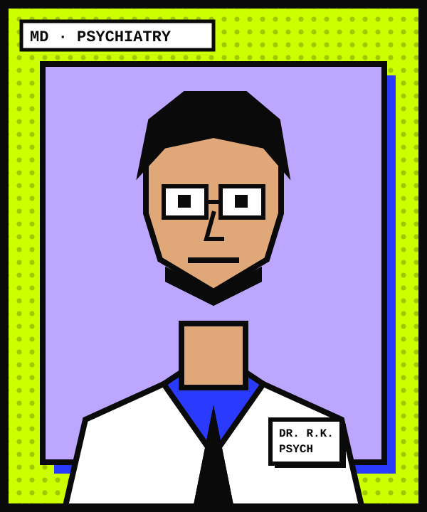

§01
Why psychiatry, and why here
As a final-year student at Sir Salimullah Medical College, Dr. Rashed Anwar Khan watched a neighbour in Old Dhaka stop leaving her home for months. Her family called it weakness. Her doctors found nothing wrong with her body. Nobody had the words for what she was living through, and that year he decided that medicine had to learn to listen to the mind as carefully as it listens to the heart.
He completed his MBBS there, trained in psychiatry at BSMMU and earned his FCPS. A postgraduate certificate in Cognitive Behavioural Therapy in London showed him how much can change in one well-structured conversation, and he brought that discipline home to Dhaka’s clinics and wards. Today he is an associate professor who still sees patients every week.
His practice is built on ordinary things done properly: an unhurried first consultation, plain explanations in Bangla or English, a written plan, and a follow-up when it matters. He teaches junior doctors that a patient who feels understood comes back for treatment, while one who feels judged often does not.